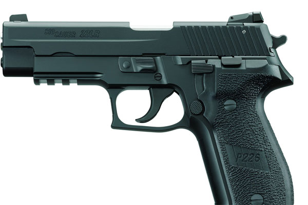

Most reliable gun in my humble opinion.
Powerful and accurate. Nothing tops it.
"The SIG P226 is a full-sized, service-type pistol made by SIG Sauer. It is chambered for the 9×19mm Parabellum, .40 S&W, .357 SIG, and .22 Long Rifle."